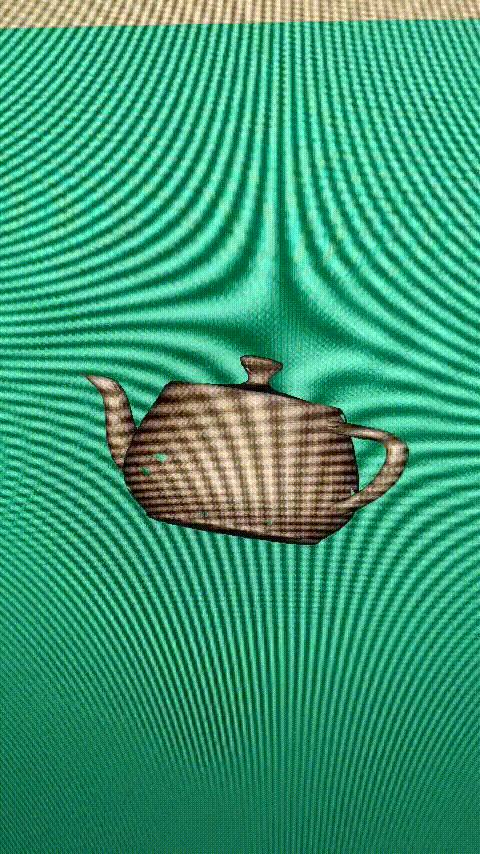
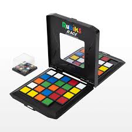
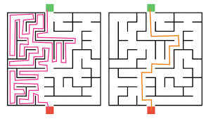

First Graphics Renderer
This if the very first 3d project I made. I made it without the help of any tutorials and before I even knew I could use the graphics card for those kinds of calucations. It ran very slow but calcualted things correctly. Had a flickering problem that I never resolved before moving on. The strobing effect across the screen is because I recorded it from my phone and it wasnt synced with my monitors framerate.

First Network Game
This Project is one I am very proud of. I replicated a tabletop game that i loved playing at the time. It was an amazing challenge to make and very fun. This was my first experience making an "online" game. It was Multiplayer! in a sense... across the same local network. Sadly I no longer even have the fuctional code. I was really really bad at using Github back then. This was 2018. Here is a picture of the talbetop game

First real Algorithm
This maze maker and solver I made was able to generate mazes using a few different algorithms. and then also solve the mazes with different algorithms
